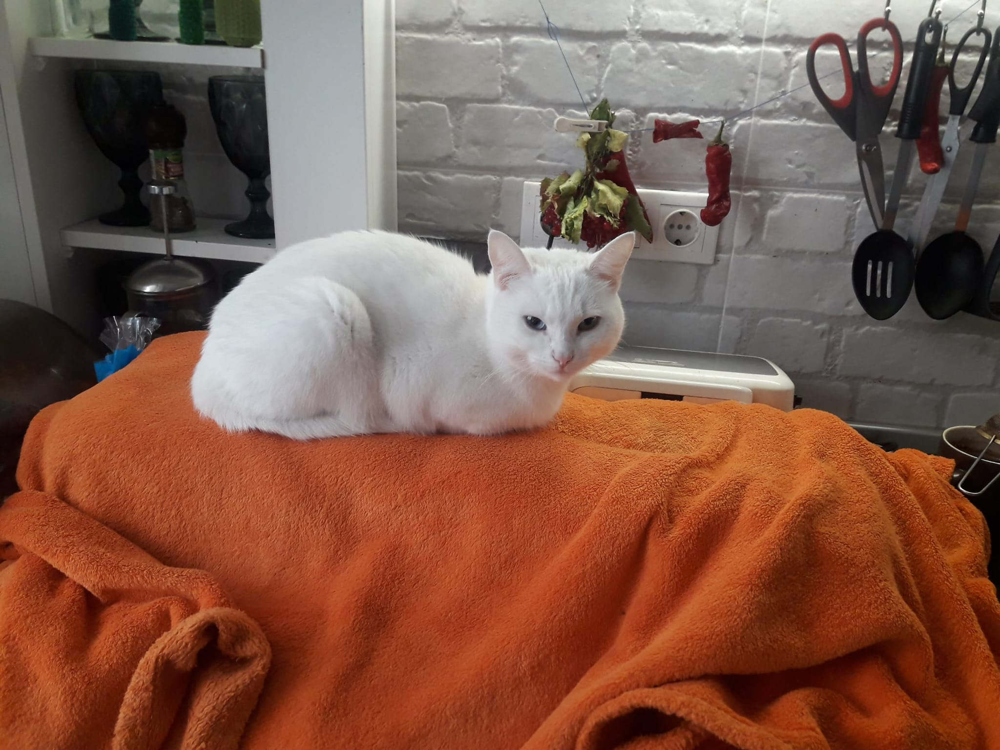
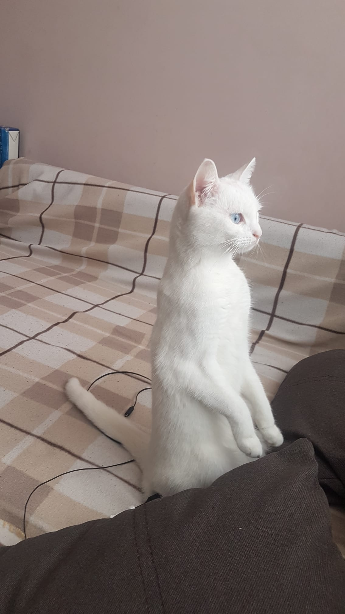
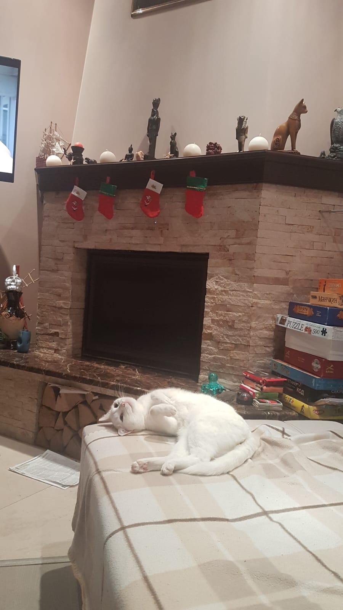

The Personal Edition
About & Skills
A little more about the person behind the screen.
Soft skills
Beyond technical knowledge
I enjoy working through problems, particularly when the solution isn't immediately obvious. I tend to approach tasks logically, paying attention to smaller details that can easily be overlooked.
- Analytical thinking and problem-solving
- Teamwork and collaboration
- Adaptability
- Independent learning
- Time management
How they have been gained
Learning beyond the classroom
Balancing university with part-time work has taught me quite a lot about managing my time. Some days go exactly as planned, while others require rearranging almost everything.
Working on group projects has also made me realise how differently people approach the same problem. Learning to combine those approaches is sometimes more challenging than solving the problem itself.
Hard skills
My technical background
My technical interests are currently centred around programming, mathematics and the possibilities of artificial intelligence.
- HTML, CSS and JavaScript
- Python programming
- Git and GitHub
- Mathematical and logical reasoning
- Responsive web design
How they have been gained
Returning to programming
My first introduction to programming happened when I was around ten years old. At the time, it was more about curiosity than any particular career ambition.
Returning to programming several years later has been an interesting experience. Some concepts feel surprisingly familiar, while others make me feel like a complete beginner again.
University has given me a reason to turn that curiosity into something more structured, although much of my learning still happens through experimenting with my own projects.
Hobbies and interests
Life away from the screen
As much as I enjoy the logical side of programming, I also like exploring its creative possibilities. Designing websites and experimenting with 3D modelling are two ways I get to combine those interests.
Not everything needs to have an academic purpose, though. Sometimes curiosity alone is a good enough reason to try something new.
A Special Acknowledgement
My main influencer and tutor
Although my university provides the academic side of my education, I have another, slightly less conventional tutor at home. The lessons mostly involve patience, taking regular breaks and accepting that my keyboard is not entirely mine.



Photograph 1 of 3